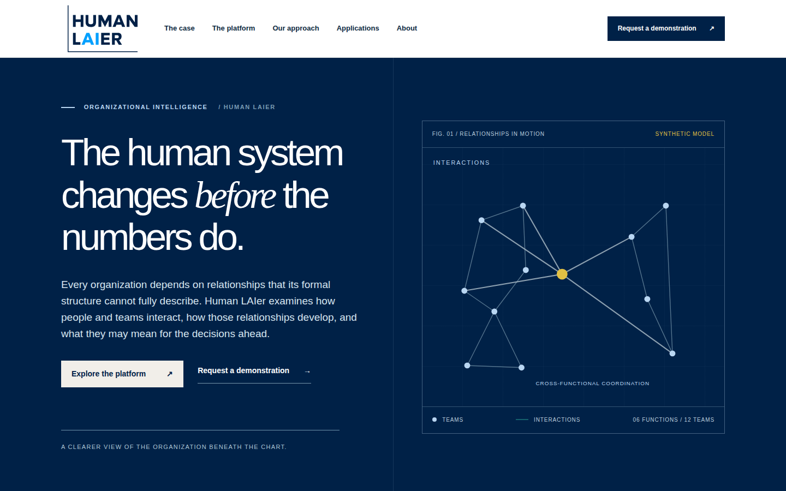
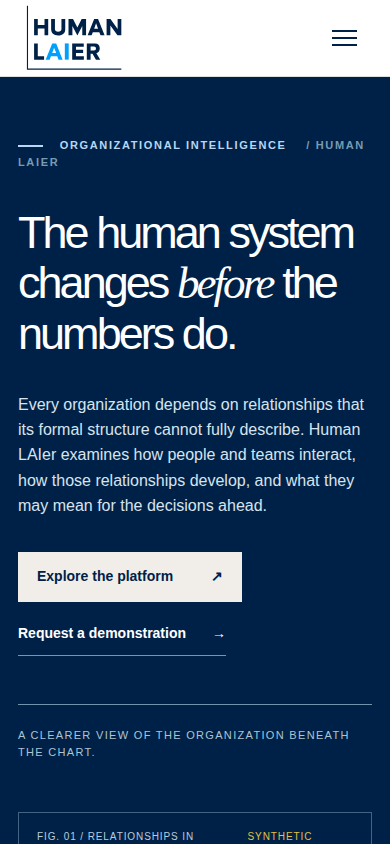

A quick visual look at your draft
These are automated snapshots of the proposed website, taken at computer and phone screen sizes. Click an image to enlarge it. Screenshots show the top of the page, not every section.
Open and explore the full draft websiteComputer view


Phone view


Read the automated accessibility report
Important: This review is publicly accessible to anyone with the link, though it is not advertised. Never include confidential or personal information in drafts. Screenshots are not a substitute for checking buttons, links, accessibility, and the full interactive preview. Do not submit preview contact forms.